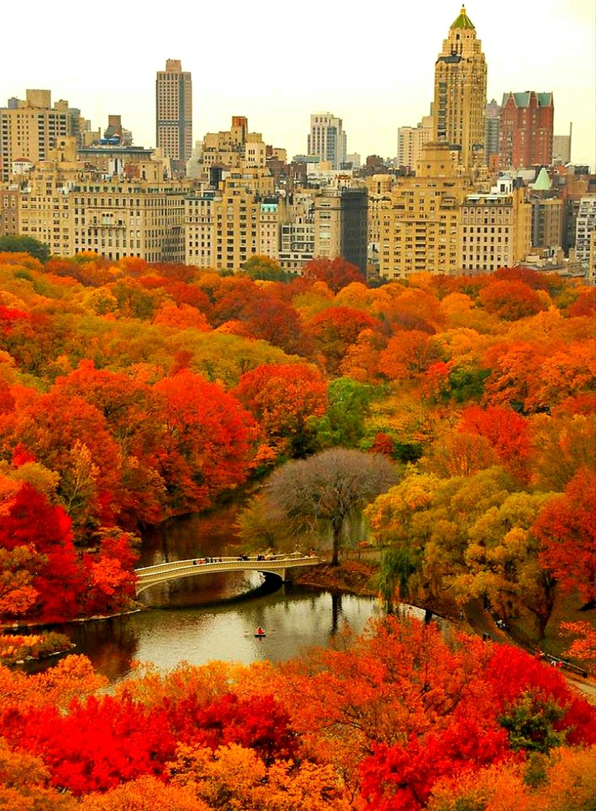
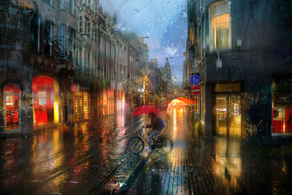

О себе много рассказывать не буду, это скучно, расскажу о своей любимой поре года.
Унылая пора! Очей очарованье!
Приятна мне твоя прощальная краса —
Люблю я пышное природы увяданье,
В багрец и в золото одетые леса...
Это все про осень. Очень красивая пора года, когда природа меняет краски и радует нас разными цветами каждый день. Еще можно погреться в солнечных лучах и вспоминать летние теплые деньки :)

В городе осень тоже прекрасна...
И даже в дождь... во всем есть свое неповторимое очарование

Самые красивые парки в городе вы можете найти по этой ссылке
Парки в городе
Помните, у природы нет плохой погоды... улыбайтесь и радуйтесь жизни каждый день! :)